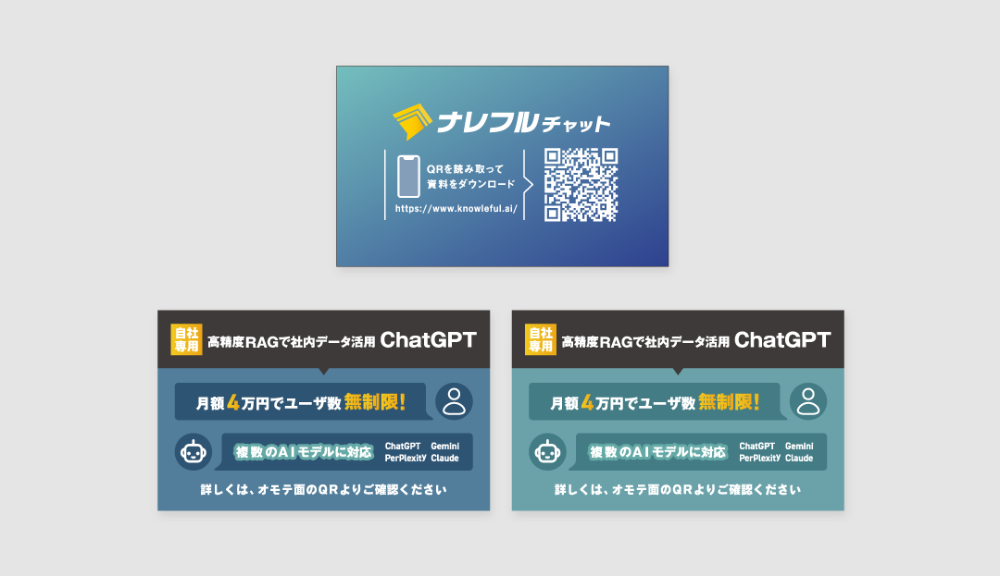
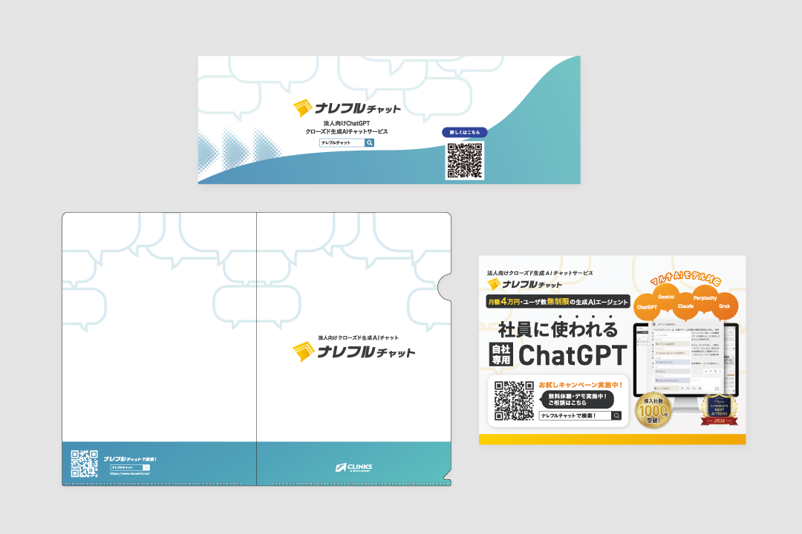
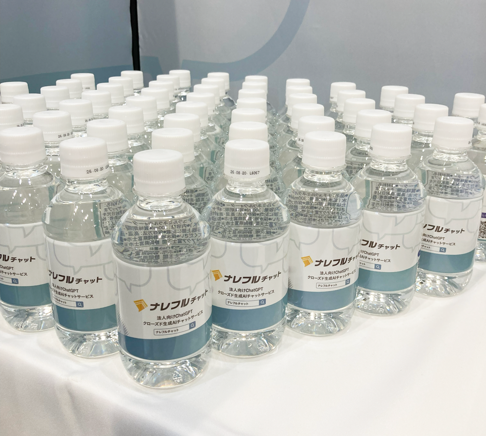
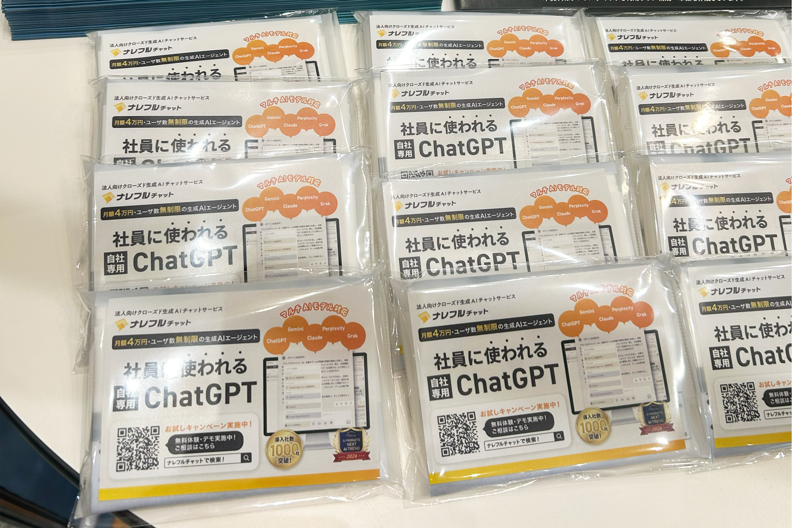

GRAPHIC
展示会 ノベルティ

プロジェクトの概要
自社サービスの展示会出展におけるノベルティの企画・制作を担当。10回以上の展示会において、来場者との接点創出およびブランド認知向上を目的に、用途やターゲットに応じたノベルティ設計を行いました。単なる配布物ではなく、手に取られ、持ち帰られることを前提とした企画・デザインを意識しています。
課題と解決策
展示会では限られた接触時間の中で印象を残す必要がある一方、汎用的なノベルティでは記憶に残りにくいという課題がありました。そのため、利用シーンやターゲットに応じてアイテム選定から設計を行い、実用性や季節性も踏まえたノベルティを企画。ブランドカラーやサービスの特徴を反映しつつ、使用シーンに応じて適切に想起される接点設計としました。
成果
ノベルティを起点に来場者の興味喚起とブース誘導を実現し、接点創出に寄与。営業やプロダクト開発スタッフから来場者との会話のきっかけづくりや訴求のしやすさの点で好評をいただきました。
担当領域
構成設計／情報整理／デザイン／入稿データ作成
使用したツール



